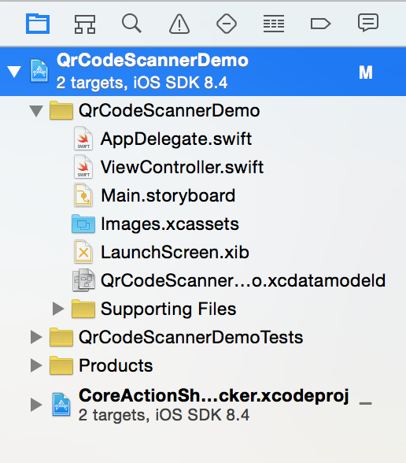
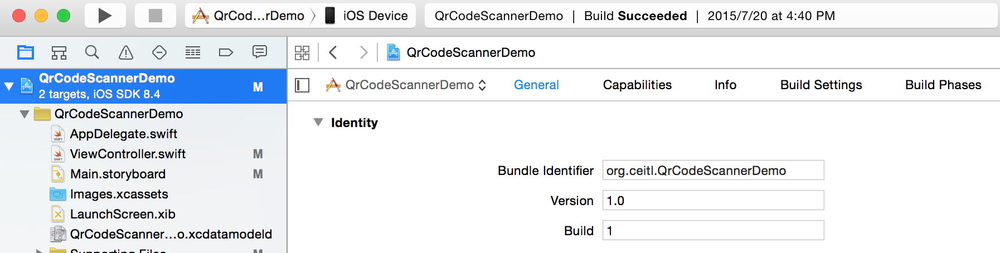
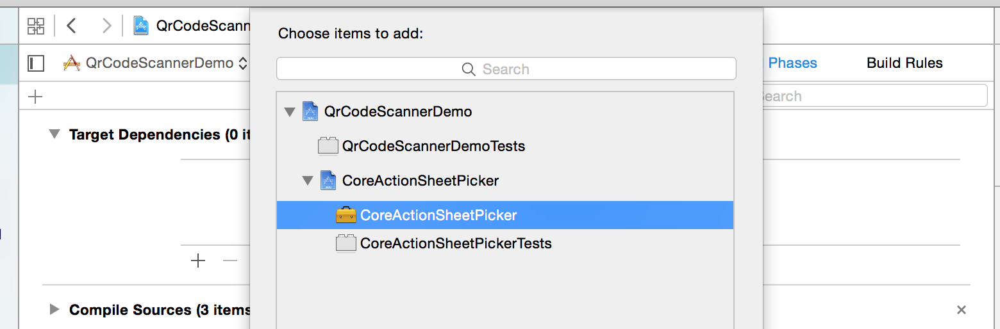
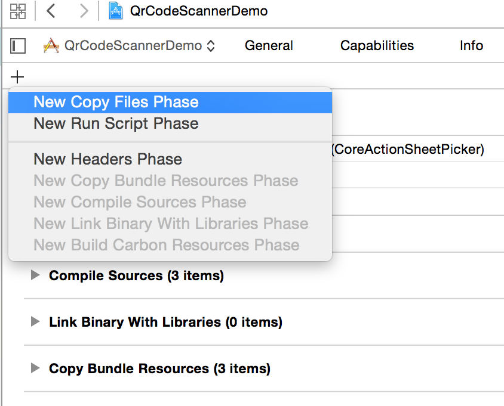
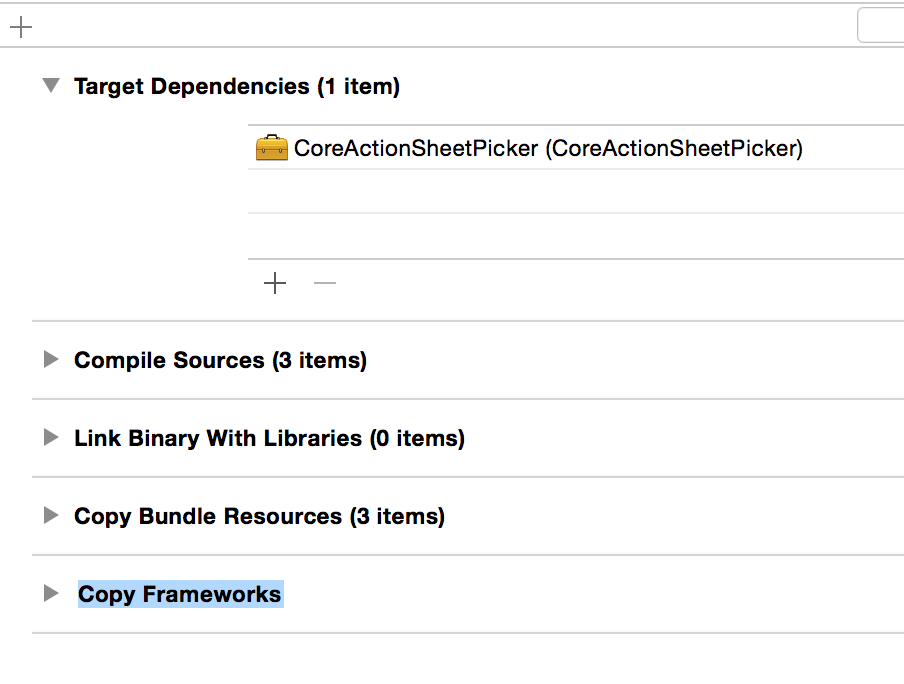
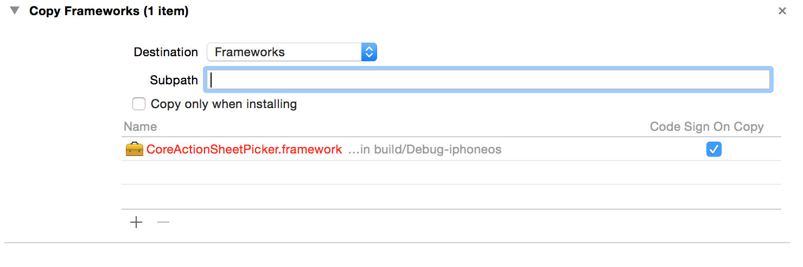
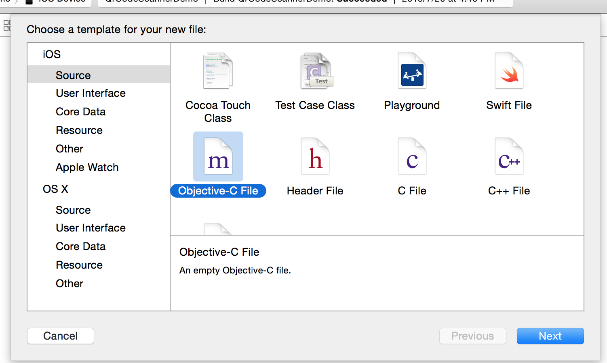
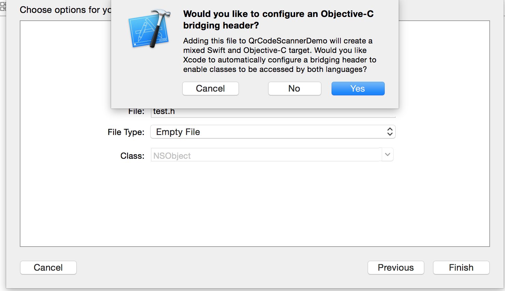

最近因為工作的關係開始接觸 iOS SDK，Apple 官方文件算是頗齊全的，但相較於 Android 的手冊，還是略遜一疇（Google 大神還是比較有善～）。而本次目標是在 iOS 裡面新增一個簡單下拉式選單（Dropdown Menu、Pulldown Menu），憑著之前新增元件的經驗，我開始在 Xcode Object Library 裡搜尋下拉選單，但不管我打 Dropdown、Pulldown，還是 Combobox 就是沒有！！！一向帶給人有善印象的 Apple 咬一口，居然沒有提供下拉選單這種元件，不會要自己刻吧，崩潰。。。
還好現在第三方社群很發達，大家都很 Nice！拜了幾輪 Google 大神後，大神給了指示，原來在 iOS 裡下拉選單需要用 UITextField 這個元件來改造，然後再加上一些其他元件完成選單的內容。選單的製作 Google 大神給了我兩個答案，一個是透過修改 UITextField InputView，另一個是使用 ActionSheetPicker-3.0，以下將一一介紹：
方法一：修改 UITextField InputView（Ref.)
- 首先在目標 ViewController 裡面新增幾個成員變數。1234567891011class ViewController: UIViewController {//UITextField 的 Reference Outlet 變數weak var textField: UITextField!//選單元件private var pickerView: UIPickerView!;//下拉選單的內容private var dataArray: NSArray!;。。。。。}
記得到 Storyboard 裡將Reference Outlet 變數與元件建立連結。
在 ViewController 的 viewDidLoad() 裡改造 UITextField，現在先將它看起來像下拉選單（新增下拉符號）。
1234567891011121314151617override func viewDidLoad() {。。。。。//指定下拉符號圖片var img = UIImage(named: "dwn")self.textField.rightView = UIImageView(image: img)//設定圖片填滿右視圖self.textField.rightView!.contentMode = UIViewContentMode.ScaleAspectFitself.textField.rightView!.clipsToBounds = true//顯示下拉符號self.textField.rightViewMode = UITextFieldViewMode.Always//建立委托self.textField.delegate = self。。。。}再來在 ViewController 裡新增兩個 function ，一個用來建立選單元件（使用 UIPickerView 及 Toolbar），一個用來告知 iOS 使用者已經完成選擇。
1234567891011121314151617181920212223242526272829303132//新增選單元件private func showPicker() {//使用 UIPickerView 做為選擇器self.pickerView = UIPickerView()//顯示目前選擇指標self.pickerView.showSelectionIndicator = true//指定資料來源與委托self.pickerView.dataSource = selfself.pickerView.delegate = self//使用 UIToolbar 建立選單元件與外觀var toolbar = UIToolbar()toolbar.barStyle = UIBarStyle.Defaulttoolbar.sizeToFit()//新增完成選擇（Done）按鈕var doneButton = UIBarButtonItem(title: "Done", style: UIBarButtonItemStyle.Done, target: self, action: "doneClicked")//讓按鈕靠右對齊的元件var flexibleSpace = UIBarButtonItem(barButtonSystemItem: UIBarButtonSystemItem.FlexibleSpace, target: nil, action: nil)//將元件放到 toolbar 裡面toolbar.setItems([flexibleSpace, doneButton], animated: true)}//使用者點擊成選擇（Done）按鈕後的動作func doneClicked() {//隱藏選單self.textField.resignFirstResponder()}最後建立使用者與 UITextField 和 UIPickerView 的互動事件，以及設定 UIPickerView 的選項資料。
12345678910111213141516171819202122232425262728293031323334353637class ViewController: UIViewController, UITextFieldDelegate, UIPickerViewDataSource, UIPickerViewDelegate {。。。。。//點擊 textField 的時候出現選單func textFieldShouldBeginEditing(textField: UITextField) -> Bool {//沒有資料的時候不顯示選單if self.dataArray != nil && self.dataArray.count > 0 {self.showPicker(textField)return true}return false}//不讓使用者透過建盤輸入文字func textField(textField: UITextField, shouldChangedCharactersInRange range: NSRange, replacementString string: String) {return false}//設定選單項目的列數，例如時間 (小時：分鐘) 的 pickerView 就是 return 2func numberOfComponentInPickerView(pickerView: UIPickerView) -> Int {return 1}//設定選單選項的數量func pickerView(pickerView: UIPickerView, numberOfRowsInComponent component: Int) -> Int {return self.dataArray.count}//設定選單項目func pickerView(pickerView: UIPickerView, titleForRow row: Int, forComponent component: Int) -> String! {return self.dataArray[row] as! String}//當選單被滑動（Sliding）的時候，改變 textField 的值func pickerView(pickerView: UIPickerView, didSelectRow row: Int, inComponent component: Int) {self.textField.text = self.dataArray[row] as! String}}
方法二：使用 ActionSheetPicker-3.0
ActionSheetPicker-3.0 這個元件是 Petr Korolev 這個好心人用 Objective-C 寫的，但我的專案目標語言是 Swift，所以要先設定套件關聯（Bridge），Petr Korolev 提供了三個方法安裝使用這個元件（CocoaPods、Carhage 和 Git Submodule），但可能我太好運了 CocoaPods 和 Carhage 的 Bridge 一直設定不起來，我只好用 Git Submodule，以下是我的作法：
設定 Git Submodule
12# 打開 Terminal，然後切換目錄到目標專案的根目錄，最後打上這一行$ git submodule add https://github.com/skywinder/ActionSheetPicker-3.0.git用 Finder 打開專案目錄底下的 ActionSheetPicker-3.0 資料夾，然後將 /CoreActionSheetPicker/CoreActionSheetPicker.xcodeproj 拖到 Xcode 的 Project Navigator 裡面。
用滑數點擊 Xcode Project Navigator 裡最上面的專案圖案（藍色的 Icon），右邊跳出專案設定，如下圖：
切換專案設定的標籤到 Build Phases，在 Target Dependancy 裡面新增 CoreActionSheetPicker.framework。
一樣在 Build Phases 裡，新增一個 New Copy Files Phase，將其重新命名為 Copy Frameworks。
在 Copy Frameworks 裡，選擇 Destination 為 Frameworks，然後新增 CoreActionSheetPicker.framework。
隨便新增一個 Objective-C 檔案到專案裡面，然後 Xcode 會詢問是不是要新增 Objective-C Bridge Header，請按「是」。
在「專案名稱-Bridging-Header.h」裡新增下面這行：
1在目標 ViewController 裡面新增 Reference Outlet 變數和資料容器，然後將 Reference Outlet 元件建立連結。
12345678class ViewController: UIViewController {//UITextField 的 Reference Outlet 變數weak var textField: UITextField!//下拉選單的內容private var dataArray: NSArray!;。。。。。}在 ViewController 的 viewDidLoad() 裡將改造 UITextField 改造成下拉選單。
1234567891011121314151617181920override func viewDidLoad() {。。。。。//指定下拉符號圖片var img = UIImage(named: "dwn")self.textField.rightView = UIImageView(image: img)//設定圖片填滿右視圖self.textField.rightView!.contentMode = UIViewContentMode.ScaleAspectFitself.textField.rightView!.clipsToBounds = true//顯示下拉符號self.textField.rightViewMode = UITextFieldViewMode.Always//建立委托self.textField.delegate = self//設定使用者點擊事件self.textField.addTarget(self, action: "selectClicked:", forControlEvents: UIControlEvents.TouchDown);。。。。}最後建立使用者與 UITextField 的互動事件，以及設定 ActionSheetPicker。
123456789101112131415161718192021222324class ViewController: UIViewController, UITextFieldDelegate {。。。。。//設定 textField 唯讀func textFieldShouldBeginEditing(textField: UITextField) -> Bool {return false}//不讓使用者透過建盤輸入文字func textField(textField: UITextField, shouldChangedCharactersInRange range: NSRange, replacementString string: String) {return false}//使用者點擊事件func selectClicked(sender: UITextField) {ActionSheetStringPicker.showPickerWithTitle(nil, rows: self.dataArray, initialSelection: 0, doneBlock: {picker, value, index inself.textField.text = valuereturn}, cancelBlock: {ActionStringCancelBlock inreturn}, origin: sender.superview)}}